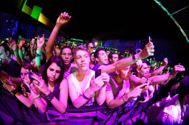

Sónar Festival daily report #2: Amon Tobin, Nicolas Jaar, Hawtin, Fatboy Slim & more


The festivities revolving around Barcelona’s famed Sónar Festival stepped up a notch on Friday. ‘Sónar by Day’ again entertained thousands with some of the best that the electronic underground has to offer, though it also saw the stupendous ‘Sónar by Night’ launching at the sprawling Fira Gran Via conference centre, featuring one of the world’s most cleverly balanced festival lineups in terms of juggling mass appeal with underground cred.
‘Sonar by Night’ is set across three sprawling rooms, including the cavernous warehouse-style SonarClub and the two open-air SonarPub and SonarLab rooms –each one easily capable of housing 10,000+ punters. US pop princess Lana Del Rey brought the mass appeal to SonarPub shortly before midnight, while Amon Tobin was simultaneously presenting his dazzling ISAM show over at SonarClub – reflecting one of the trends that was apparent over the evening, in terms of otherwise underground acts transforming their performances into blockbuster audio-visual spectacles; the same approach was showcased post 4.30am by Warp Records’ experimental veteran Squarepusher, with a similarly brainbending visual show.
Nicolas Jaar played a mesmerising live set of deep melodic build that hit all the right emotional notes, and showed him to be worthy of the hype, while James Blake performed an eclectic and somewhat odd DJ set in SonarPub that curiously transposed tough-edged bass music over Beyonce. Friendly Fires followed and brought the indie-rave euphoria, shortly before Richie Hawtin took control in SonarClub to fill the dark warehouse with some tough and very deep techno.
With a variety of other A-grade DJs and live acts across the evening like James Murphy, Simian Mobile Disco, Brodinski, Nina Kraviz and Jaques Lu Cont, the big surprise of the evening was Fatboy Slim who played an impeccable party set, straightforward in its appeal but still packed with plenty of exciting surprises. Backed by his own colourful synced audio-visual show, he drew the evening’s biggest crowd to SonarPub and got more hands-in-the-air than any other artist all night.
Saturday evening’s ‘Sonar by Night’ is set to host New Order, Deadmau5, Luciano, Hot Chip, Modeselektor, Laurent Garnier, Maya Jane Coles, Azari & III, Kode 9, Metronomy and more.
Stay tuned for more coverage, and keep your eyes peeled to the Sónar Festival’s YouTube channel for live streaming across the weekend.